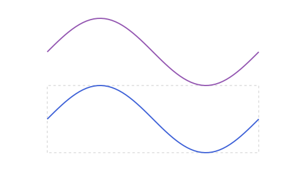

Points, Lines & Rays: Special Points & Curves
Harmonic conjugate and the golden ratio point
Given A, B on a line and a third point P on that same line, harmonic_conjugate returns the point P' for which (A, B; P, P') is a harmonic range, i.e. P and P' divide [A,B] internally and externally in the same ratio. golden_ratio_point is the special point that divides [A,B] in the golden ratio, A + (B-A)/φ.
using Apollonius
A, B = APPoint(0.0, 0.0), APPoint(8.0, 0.0)
P = APPoint(2.0, 0.0)
Pgold = golden_ratio_point(A, B) # ≈ [4.944, 0.0]
Pconj = harmonic_conjugate(A, B, P) # [-4.0, 0.0]: P's harmonic conjugate[-4.0, 0.0]
P' falls outside [A,B], on the opposite side from B: that is exactly what makes the division "external" for one of the two points and "internal" for the other, which is the defining property of a harmonic range.
The Apollonius circle of two points, and concyclic points
apollonius_circle(a, b, k) is the locus of points p with distance(p, a) / distance(p, b) == k: a genuine circle for any k != 1 (at k == 1 the locus degenerates to the perpendicular bisector of [a, b], a line, so that case throws an ArgumentError instead):
ap = apollonius_circle(A, B, 2.0) # every point on it is twice as far from B as from A
Ptest = polar_point_deg(ap.r, 50.0, ap.center) # an arbitrary point on ap
distance(Ptest, A) / distance(Ptest, B) # ≈ 2.0, regardless of the angle chosen1.9999999999999998
try
apollonius_circle(A, B, 1.0) # k == 1: the locus is a line, not a circle
catch e
e
endArgumentError("apollonius_circle: k ≈ 1; the locus is the perpendicular bisector of [a,b], not a circle")is_concyclic(a, b, c, d) tests whether four points lie on a common circle, used internally by is_cyclic for a quadrilateral:
circ = APCircle2(APPoint(0.0, 0.0), 5.0)
Q1, Q2, Q3, Q4 = (polar_point_deg(5.0, ang) for ang in (0.0, 80.0, 170.0, 260.0))
is_concyclic(Q1, Q2, Q3, Q4) # true: all 4 on the same circle
is_concyclic(Q1, Q2, Q3, APPoint(1.0, 1.0)) # false: this last point isn't on circfalseRandom points on a boundary
rand(s) (and rand(s, n), rand(rng, s), the usual Base.rand forms) draws a random point on s's own boundary or perimeter, never its interior. It's defined once, generically, via Julia's Random.Sampler protocol, so it works the same way for APSegment here and for most other shapes in this package:
| Type | Uniform in |
|---|---|
APSegment | arc length (exact) |
APCircle2, APCircularArc2 | arc length (exact) |
APEllipse2, APEllipticArc2, APParabolicArc2, APHyperbolicArc2 | the curve's own parameter (slightly denser near the flatter parts) |
APTriangle/APQuadrilateral/APStraightNgon, curved regions, APBoundingBox | the whole perimeter (each side chosen with probability proportional to its own length, then a point on it by the rule above) |
Not defined for APLine/APRay (infinite: no uniform distribution exists) or APParabola2/APHyperbola2 as full curves (also infinite).
For a point in the interior, use rand_inside([rng,] s): uniform over the area of an APCircle2 (the disk), an APEllipse2, an APBoundingBox, an APTriangle, an APQuadrilateral or an APStraightNgon (the last two by triangulating first, so a concave polygon works too).
using Random
q = rand_inside(Xoshiro(1), APCircle2(APPoint(0.0, 0.0), 2.0))
distance(q, APPoint(0.0, 0.0)) <= 2.0trues = APSegment(APPoint(0.0, 0.0), APPoint(10.0, 0.0))
p = rand(s)
is_on_segment(p, s) # true: always exactly on the segment, by construction
pts = rand(s, 5) # the dims... form: a Vector of 5 independent draws
length(pts) == 5 && all(q -> is_on_segment(q, s), pts)true
Every other page repeats this for its own types where it matters: see Circles: Arcs, Conics: Ellipse, Parabola & Hyperbola and Polygons: Measurements & Operations.
Arbitrary parametric curves
Every curve so far has a closed analytic form (a line, a circle, an ellipse...). APParametricCurve2 is the escape hatch for anything outside those fixed families: it wraps a function f(t)::APPoint over a range t ∈ (tmin, tmax). An ordinary y = f(x) curve is just APParametricCurve2(x -> APPoint(x, f(x)), (xmin, xmax)):
sine_curve = APParametricCurve2(x -> APPoint(x, sin(x)), (0.0, 2pi))
point_on(sine_curve, pi / 2) # (π/2, 1.0): the peak[1.5707963267948966, 1.0]translate/rotate/homothety/reflection all wrap f in a new closure rather than sampling it, so a transformed APParametricCurve2 stays exact regardless of what f computes:
shifted = translate(sine_curve, APVector(0.0, 2.0))
point_on(shifted, pi / 2) # (π/2, 3.0): same curve, raised by 2[1.5707963267948966, 3.0]f has no closed form the package can inspect, so APBoundingBox falls back to sampling it at n (default 200) evenly spaced points over trange and taking the union of their boxes. Unlike every other APBoundingBox method in this package, this one is an approximation, not exact: a sharply curving f between sample points can poke outside the box it returns.
box = APBoundingBox(sine_curve)
box.min[2], box.max[2] # ≈ (-1.0, 1.0), the true range of sin, already tight at the default n(-0.9999688468941563, 0.9999688468941563)